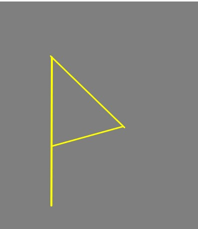

ウィン

喜びの意味が掘り下げられて幸せ、喜び、充実になるように、願望の達成そのものは幸せ、喜び、充実にもなる。
セイヨウトネリコはユグドラシルに深く関係するほか、ルーン文字が元々セイヨウトネリコの枝で表現されたものであることから
深い意味を表すルーン文字であることが窺える。オーディン神は片目を代償に永遠の叡智を得つつセイヨウトネリコであるユグドラシルを折った枝で槍の柄を作りました。
叡智は充実や幸せ、喜びに繋がるからこそオーディン神を神性としてるのではないかと考察する